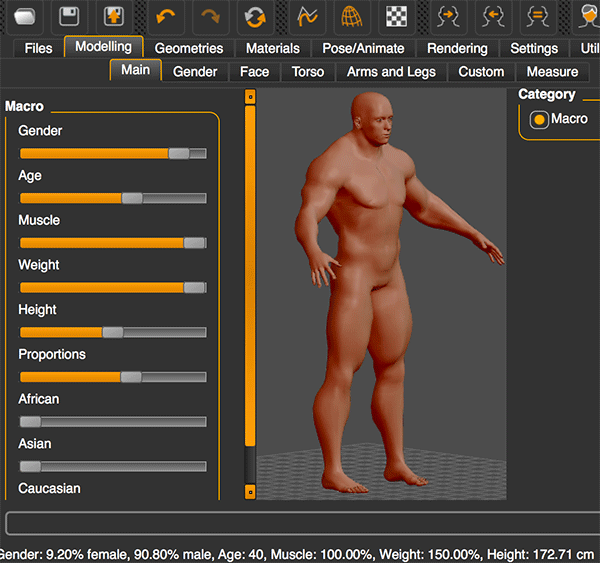
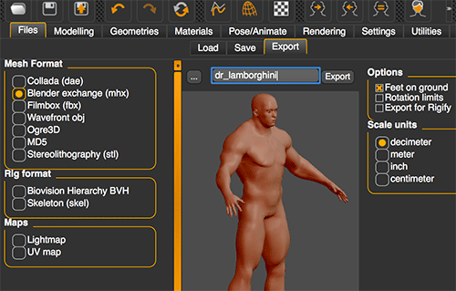
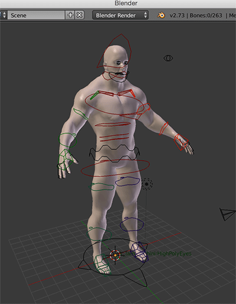
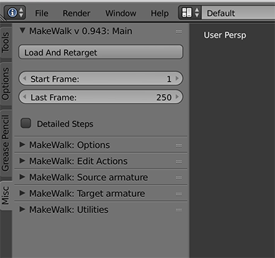
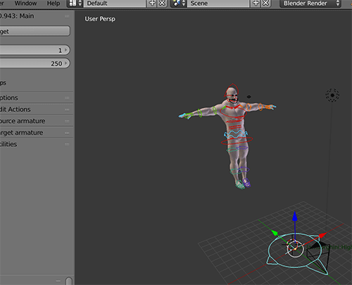
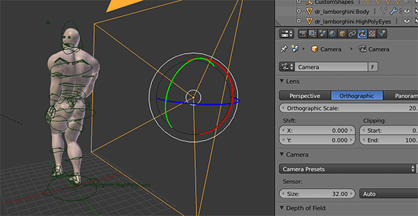
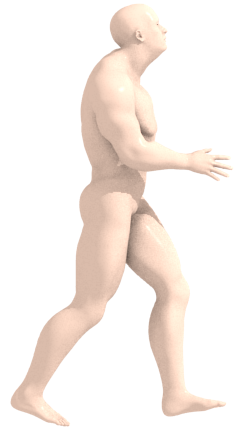
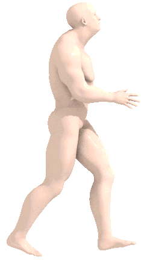
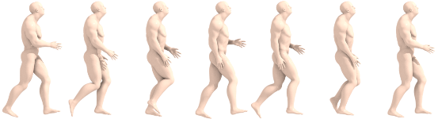

without much artistic ability
If you need some human spritesheets but don't have the time or artistic skill you've come to the right place. I occasionally try to make a game and, as someone who works as a programmer, one of my biggest struggles is putting together graphics of any quality. This recipe attempts to bridge that gap by applying motion capture data to generated 3d human models and rendering the resultant animation to spritesheets with freely available tools.
First, we need a 3d model of the character. We'll be generating one with MakeHuman which lets you manipulate a bunch of parameters to generate unique models.
Installation seems real easy: download it here.
Drag around the sliders until you're happy with the result.

Nice. Maybe you're not so bad at art after all.
When you're done with your character it's time to export it for use in Blender. Go to Files > Export tab and select "Blender exchange (mhx)" as the mesh format. Name it and export it.
Blender is also simple to install and can be downloaded here.
We also need to install some addons for Blender. Follow these steps, depending on your platform: installing MakeHuman blender tools. You'll only need to install "mhx_importer" and "MakeWalk". It's basically just copying some files to the right place and then enabling them in the File > User Preferences menu of Blender.
Now "MakeHuman mhx" should be available as an import option in Blender. Import the character you exported from MakeHuman.

The CMU Motion Capture Database has a bunch of common motions available. You can get a preview of the motion by downloading the "Animated" version.
However, we actually need this data in the BVH format which is not available on the CMU site. This page contains bundles of the CMU data converted to BVH. The directories are named after the CMU subject number and trial number. So subject #2 trial #1 ("walk") is in directory 02.
Back in Blender, make sure you are in pose mode with your character selected. The MakeWalk panels can be found in the tool shelf on the left under the "Misc" tab.

Click "Load and Retarget" and choose the BVH file you'd like to use. We're continuing with subject #2 trial #1.

If all went well, the motion will have been applied to the model. Use the playback controls to check it out. In all likelyhood, the animation is probably a little messed up. There are ways to clean all this stuff up but that's outside the scope of this article.
In order to render the animation we set up a camera and edit the animation so the model doesn't actually move around, keeping it in the view of the camera.
Make sure you're on the first frame. Open up the "MakeWalk: Edit Actions" panel and choose "Global Edit". From the "Pose > Clear Transforms" menu choose "Location" to move the model to the origin. Then, back in MakeWalk, click "Fixate Bone Location" then "Shift Animation." This should leave you on the last frame of the animation, with the whole thing shifted so the character never moves from the origin.
The most important camera property to be set is the alpha shading which should be set to "transparent" so we can cleanly overlay the sprites on stuff. Here I'm using an orthographic projection to make the camera set up easier since we don't really need much depth here anyways.

I've also tweaked the lighting and rendering properties a little. Turned on ambient occlusion with multiply, and environmental lighting "white". I've chosen to render the first 25 frames in the camera frame range options. Choose "Render > Render animation" and wait.
At this point you'll have a bunch of numbered images, each a frame of the animation

This is probably way higher resolution than you'll actually use. You can mess with the render output size in Blender or just resize them in the next step.

I've been using the free v0.9.5 available here but just noticed there is now a paid v1.0 which is probably very nice.
From "File > Open" choose the first image of your rendered animation. Aseprite should recognize it's a sequence and prompt you to import all the frames; choose yes.
It's probably best to "Sprite > Trim" your sequence to remove extra empty space. You might also want to remove some of the frames to reduce the size of the spritesheet. Here I've also resized the frames to measure 79px wide by 150px tall.
Use "File > Export Spritesheet" to output a spritesheet:

"File > Save as" lets you create an animated gif (only 8-bit color, 1-bit alpha here so it looks a little crappy):